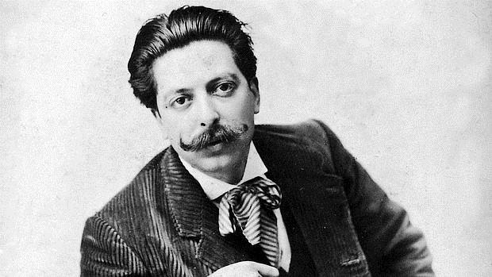

Goyescas: estructura, característiques, versió per a piano i l'òpera, argument…
A nivell internacional, i gràcies a les seves bones relacions amb els creadors parisencs (Ravel, Fauré, Saint Saëns…), va gaudir d’un notable prestigi, que es va disparar a partir de 1914, quan va presentar les seves Goyescas per a piano a la sala Pleyel de París. L’obra s’havia estrenat l’any 1911 al Palau de la Música catalana i el seu èxit va ser tan gran que Granados es va decidir a fer una òpera basada en els temes i caracters que reflectia la seva obra instrumental